3
枪支
这个版本保留原有分区和阅读顺序，但将墙体受击贴花全部升级为“真实透明洞口”表达。 命中核心区域不再只是表面裂纹，而是能够透出墙后目标，让静态画布也能直接读出遮挡失效。
继续保留软 3D 卡通武器语言，方便和受击反馈、遮挡破坏一起查看整体命中语义。
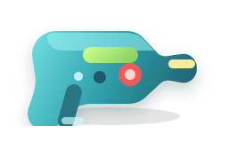
适合单发命中演示，对应轻量化穿透弹孔反馈。

适合连发压制，对应多点穿透和裂损扩散。
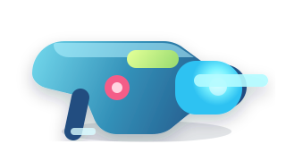
适合重击展示，配合更明显的破口和放射裂纹。
保留三视角参考，方便直接观察“墙前破口”和“墙后目标”之间的可见关系。
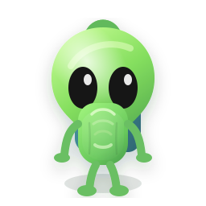
适合从破口里看到脸部、胸口和弱点区域。
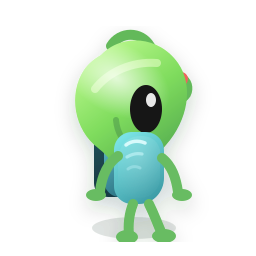
适合单点弹孔或连续扫射后的侧向窥见效果。
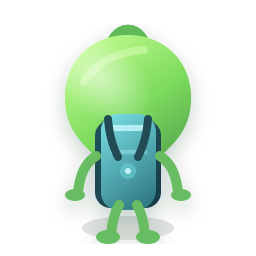
适合大面积破损后，看见后撤目标或掩体后移动轨迹。
继续保留三组静态分镜，用于观察角色在墙后移动时，穿透破口能暴露出的身体区域。
重点不是新增动作，而是让原有动作在掩体被击穿后更容易被读到。
适合从单孔或边角缺口中，看到目标平移经过的局部轮廓。
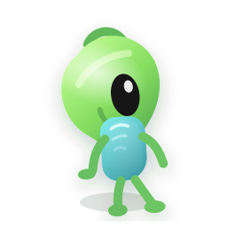

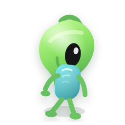
动作节奏：前探迈步 → 重心居中 → 收步续巡
适合从裂纹扩展后的破口里，看见抬手和头部朝向变化。
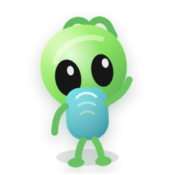
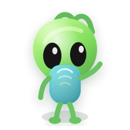

动作节奏：抬手探查 → 正向停留 → 回摆收势
适合大面积破损后观察目标快速离开掩体的可见面积变化。
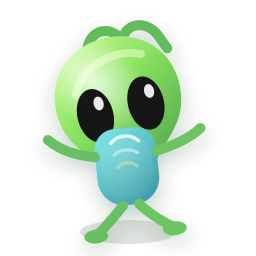
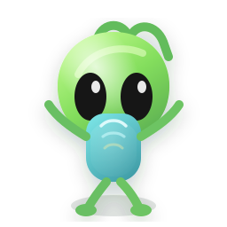

动作节奏：受惊外张 → 抬臂失衡 → 俯身冲离
继续保留行为说明，但现在更强调这些状态会不会被“穿透贴花”暴露出来。
掩体完整时仍可隐藏；一旦关键区域被打穿，墙后的轮廓会被直接看见。
穿透孔洞会让原本只在边缘可见的移动，变成可以从墙体中部直接读到。
弱点开启阶段若恰好处于墙后，穿透破口会让目标窗口更早暴露。

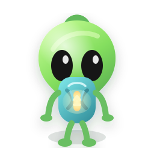
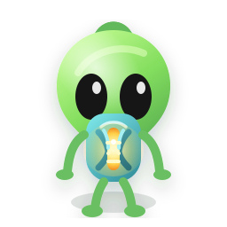
环境素材保持不变，重点是让完整墙体继续作为穿透贴花的承载表面。

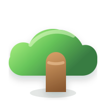


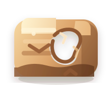
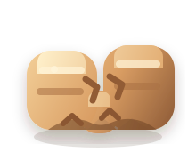
下方演示卡把墙体放在前层、外星人放在后层，再叠加透明洞口贴花。非洞口区域仍被墙挡住，洞口位置则能直接看到墙后目标。
适合手枪或精准点射，洞口小，但足够暴露后方侧身轮廓。
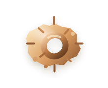
适合重击后中心破口带裂纹扩散，能看到后方正面头部与上身。

适合压制射击，破损区域更大，能从中部看到墙后目标的大块轮廓。

这 5 个贴花现在都强调“透明洞口”或“透明间隙”，用于表达真实击穿，而不是单纯表面装饰。
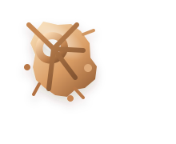